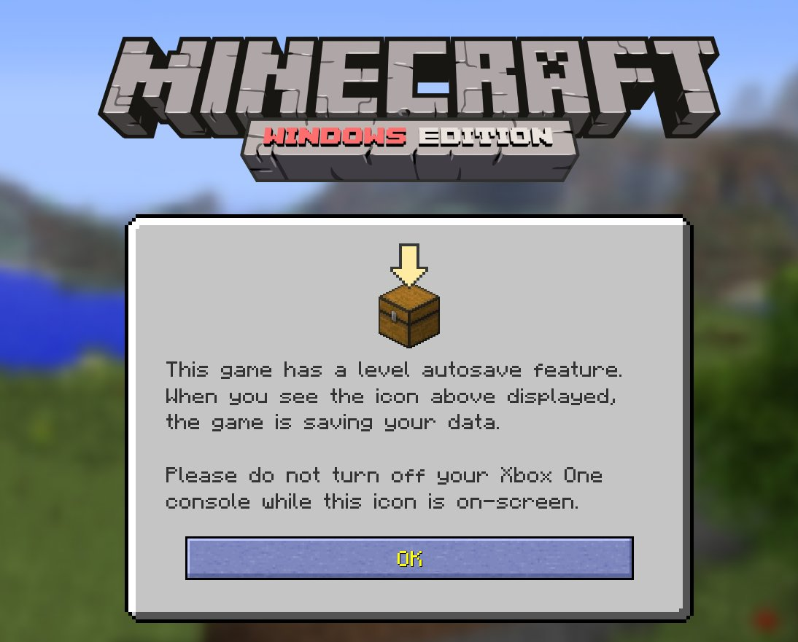
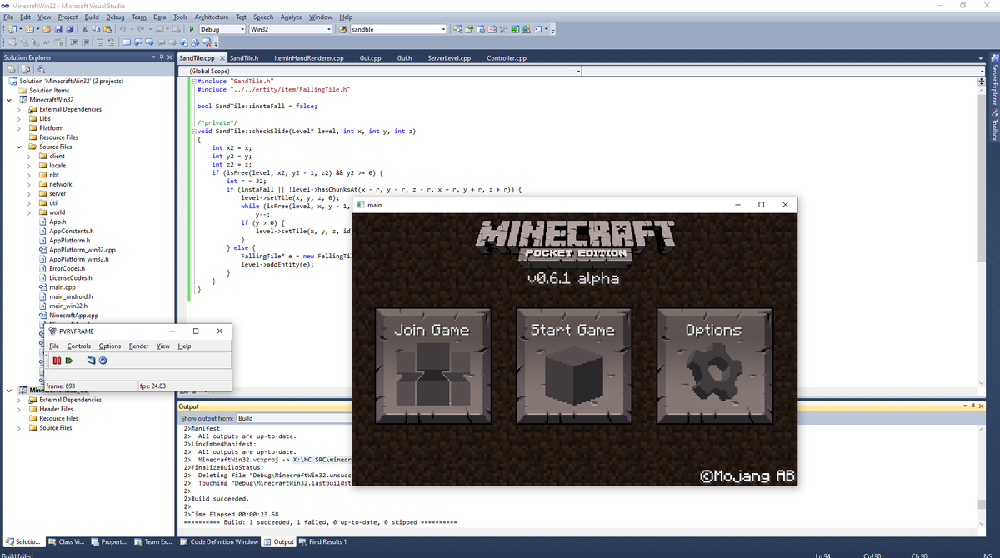
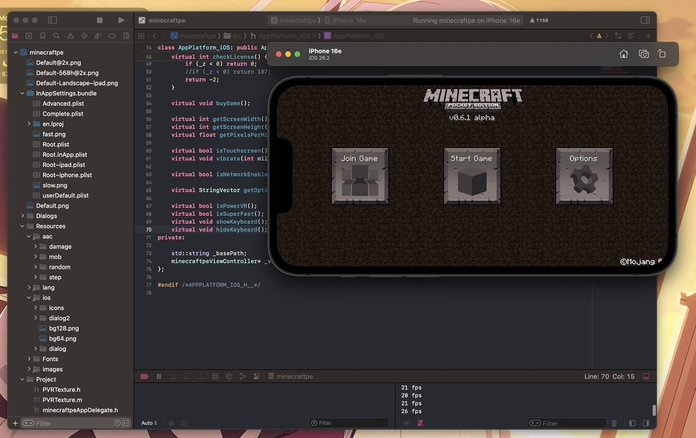
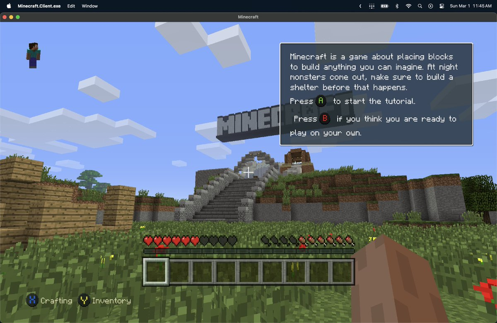

奶昔🥤
@realNyarime
主机版和MCPE（minecraftcpp-master）都不是最新版！MCPE是2013年2月的，而主机版是2014年10月的。
MCPE需要使用Visual Studio 2010构建，然后将编译的 .exe 文件放到 minecraftcpp-master\handheld\lib\bin 目录下即可运行，就像这个：
https://t.co/NCsOnUS6uA
* 可能需要将 vld_win32 文件夹移到 bin 目录下才能启动。




azure
@possiblyazure
it also runs in macOS, if for whatever reason you wanted to do that https://t.co/5FMX6y8vX1 https://t.co/t2ZcBdfS7T